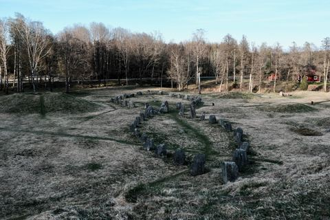
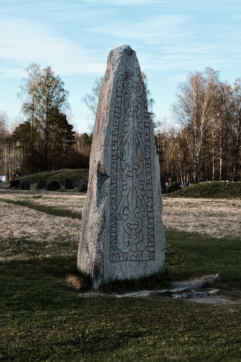
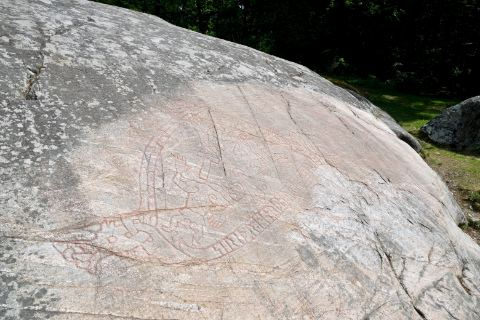
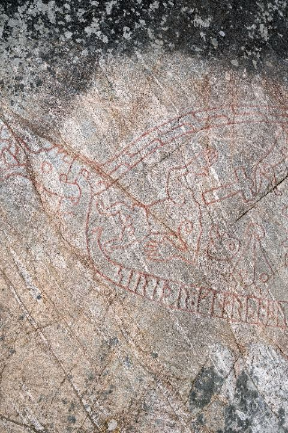
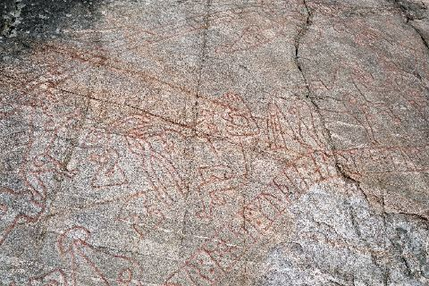

Stories
Visual essays and travel notes.
Each story is built around place, light, movement, and a small sequence of photographs.
Featured story
Landskrona Slott

Landskrona Slott
Landskrona Slott is one of Sweden’s best-preserved Renaissance fortresses, surrounded by moats, green ramparts, and the quiet atmosphere of the Öresund coast. This story follows a walk through the castle’s courtyards, passages, brick walls, and waterside setting, reflecting on its military past, architectural character, and enduring presence in southern Sweden.
Read featured · 2 min read
Church of Old Uppsala
In Gamla Uppsala, history gathers around a quiet medieval church, a wooden bell tower, old stone walls, and a runestone set into the church façade. This story follows a walk through one of Sweden’s most historically layered places, where Christian architecture, Viking Age memory, and the open landscape of Old Uppsala meet.


Ales Stenar
Ales Stenar stands on the southern coast of Sweden, where ancient stones, open fields, sea air, and a vast grey sky create one of Skåne’s most atmospheric landscapes. This story follows a quiet walk around the stone ship, observing its scale, silence, and connection to Nordic memory.


Landskrona Slott
Landskrona Slott is one of Sweden’s best-preserved Renaissance fortresses, surrounded by moats, green ramparts, and the quiet atmosphere of the Öresund coast. This story follows a walk through the castle’s courtyards, passages, brick walls, and waterside setting, reflecting on its military past, architectural character, and enduring presence in southern Sweden.


Anundshög
A walk through Anundshög near Västerås, one of Sweden’s most evocative ancient landscapes. This story explores the site’s great burial mound, stone ships, runestone, and open fields, reflecting on how memory, mythology, family, and Nordic heritage are preserved in the land.



Kärnan: Helsingborg's Medieval Keep
Helsingborg's brick keep, Kärnan, has watched over the Sound for some seven centuries — all that remains of a great medieval castle, reached today by a monumental terrace staircase climbing straight up from the old town.


The Stronghold at Glimmingehus
Standing alone among the fields of southeastern Skåne, Glimmingehus is the best-preserved medieval stronghold in Scandinavia — a tall stone house raised around 1500, when this corner of Sweden still answered to the Danish crown.


The Sigurd Carving at Ramsund
On a low rock at Sundbyholm outside Eskilstuna, an eleventh-century carving spells out the saga of Sigurd the dragon-slayer in red-painted line, while its runes quietly record a bridge raised across the Ramsund channel.




Lövånger Church
In Lövånger, a white historic church, a wooden bell tower, and a preserved church town stand together in the quiet landscape of Västerbotten. This story follows a spring visit shaped by clear northern light, melting snow, red timber cottages, and the calm rhythm of Swedish cultural heritage.


No stories found.
Reset the category filter to return to the archive.